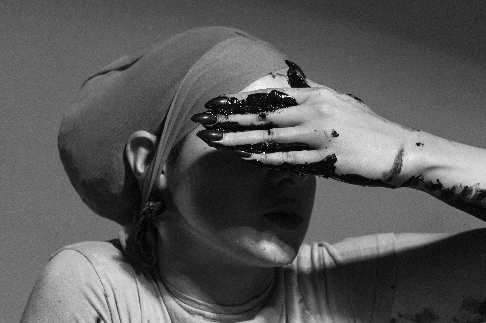
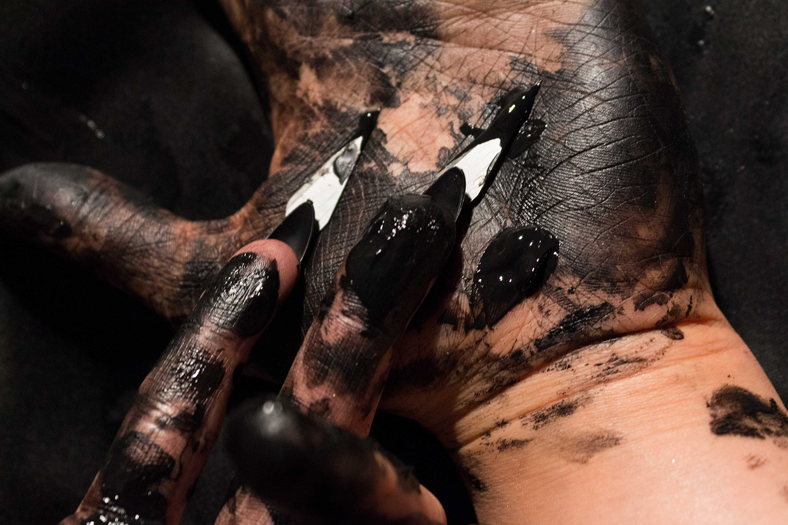
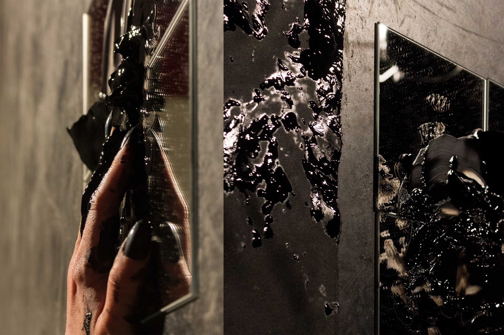
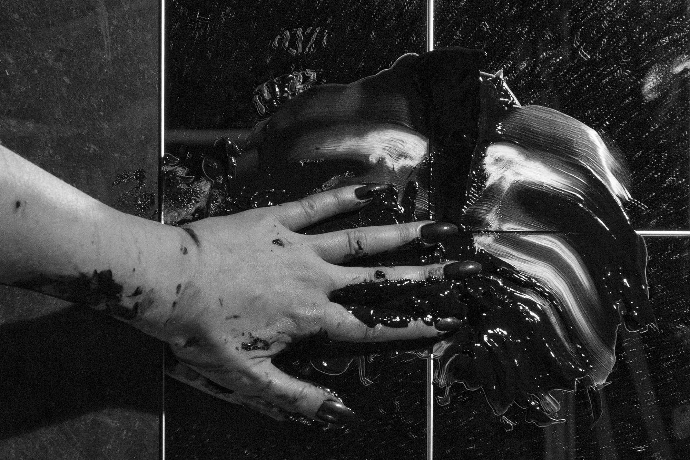
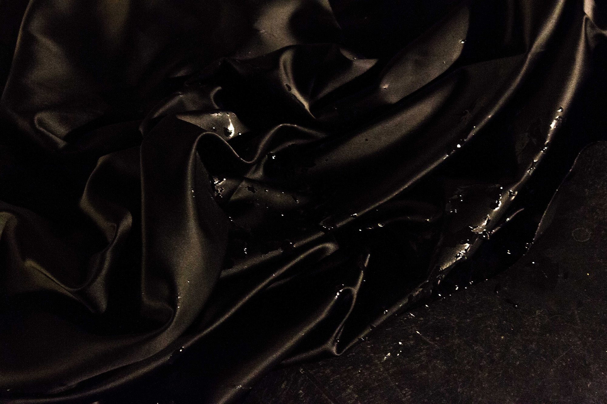
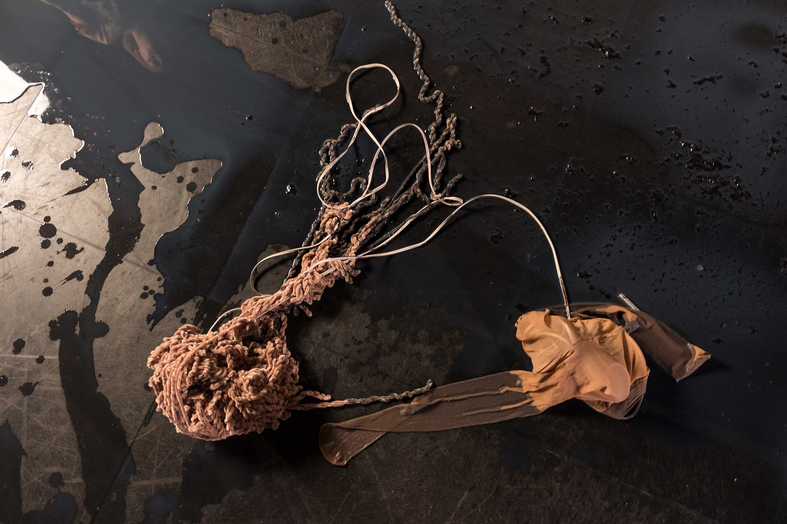
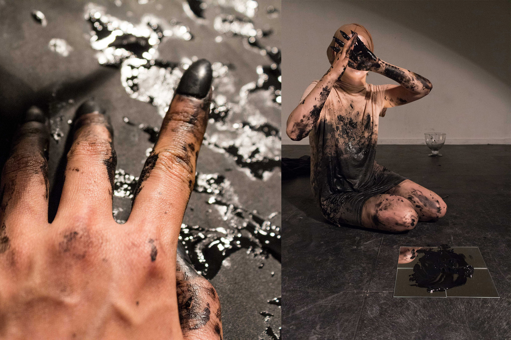

1. Still of the performance 'Beast Witout Hands', with Zuzanna Zgierska, 2018.
1.
2.
3.
4.
5.
6.
![6. “Soy sausage imitates the operationalised pig, referring only to a form and no longer to a specific content. For Berwanger, the historical entanglement of technicization is linked to our use of animals: ox and plow in agriculture, feather quill in writing, wool for textile products, etc. Nowadays however, animal bodies are becoming superfluous as a resource materials: “we removed ourselves from given and trusted circuit since we are no longer dependent on animal (within us).””—an extract from 'Beast Without Hands'.](img/performance_2018/PER_beastieHands_5.jpg)
7.
8.
Beast Without Hands, 2018
“Next image: two human hands—an exemplary reference to handicraft—are caught in an attempt to touch. Acting like magnets, they never reach each other. “Who or what is acting in a culture of constant mediation?,” wonder curators of transmediale, the yearly festival on media and technology. The video-logo of 2017 edition called ever elusive (n.b designed in an iPhone screen format) refers to the destabilized centrality of the human in nowadays media culture. The main actor, who had mastered his tools during the past few centuries, created a stage of information systems and hybrid techno-ecologies, which in turn started to be an entity on its own. In other words, the elusive character of today’s media feeds and obscures new forms of agency—in which human no longer plays an active role. [transmediale] How does recent technology influence the dynamic between human and non-human, subject and object? What is the role of analog and digital craft in relation to human, understood as the dychotomy of body and mind? Is this division still valid?”—Beast Without Hands, Trang Ha & Zuzanna Zgierska, 2018.
In collaboration with Zuzanna Zgierska. The project is divided into two parts: the text and the performance.
Polish version of the text was published at FORMY Magazine.
For English version, please contact me.